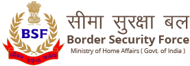

Border Security Force
History
Till 1965 India’s borders with Pakistan were manned by the State Armed Police Battalion. Pakistan attacked Sardar Post, Chhar Bet and Beria Bet on 9 April, 1965 in Kutch. This exposed the inadequacy of the State Armed Police to cope with armed aggression due to which the Government of India felt the need for a specialized centrally controlled Border Security Force, which would be armed and trained to man the International Border with Pakistan. As a result of the recommendations of the Committee of Secretaries, the Border Security Force came into existence on 01 Dec 1965, and Shri K F Rustamji was the first chief and founding father. Shri Vivek Kumar Johri, IPS is current Director General of the BSF.
ETHOS:
The BSF, in its 54th years of existence, has emerged as an elite force of the country having excelled with distinction in the 1971 & Kargil war with Pakistan. Our mission is “Any task, any time, any where”. The Officers and men have given blood and sweat to uphold its motto “Jeevan Paryant Kartavya”.
YOU KNOW ?
- BSF is "INDIA'S FIRST LINE OF DEFENCE".
- Defending LC shoulder to shoulder with Army on the toughest peaks in Jammu & Kashmir including neutralizing infiltration of ANEs into Indian soil..
- BSF has been defending Sir Creak in Arabian Sea and Sundarban delta in the Bay of Bengal with its state of art fleet of Water Crafts.
- BSF has instrumental role in helping state administration in maintain Law and Order and conduct of peaceful election..
- We are also containing naxals/insurgents menace from spreading in the Naxals infected states and bringing peace...
- We are contributing dedicated services to UN peace Keeping Mission by sending large contingent of our trained manpower every year..
- As a savior of humanity , BSF has been crusading against natural calamity to save precious human lives as and when warranted.
- We have also scaled Mount Everest in 2018 as well as in past.
Role of BSF
SECURITY OF BORDER OF India and matters connected therewith.
TASKS OF THE BSF:
The tasks of the BSF are divided as follows:
- Peace time :
- Promote a sense of security among the people living in the border areas.
- Prevent trans border crimes, unauthorized entry into or exit from the territory of India.
- Prevent smuggling and any other illegal activity.
- War time :
- Holding ground in less threatened sectors so long as the main attack does not develop in a particular sector and it is felt that the local situation is within the capability of BSF to deal with. The BSF units can continue to remain deployed in particular sector even in a war situation to release the Army for offensive tasks. In the even of a major attack developing, which is not within the capacity of the BSF to deal with, the Army can be expected either to reinforce the BSF with Artillery or other support, or relieve the BSF from its role in the particular sector.
- Protection of vital installations particular air-fields against enemy commandoes/para troopers or raids. The role can be entrusted to the BSF Units which are placed under the Army's operational Control.
- Providing extension to the flanks of main defence line by the holding of strong points in conjunction with other units.
- Limited Aggressive action against para military or irregular forces of the enemy within the overall plan of the Armed Forces .
- Performing special tasks connected with intelligence including raids. These are tasks which might be entrusted to BSF Units by the Army in a war situation according to local necessity. It would, however, be expected that the state of training and equipment of the particular BSF Units would be kept in view in assessing their adequacy for the tasks.
- Acting as guides in an area of responsibility where routes are known. This is a task which the BSF should be able to perform.
- Maintenance of law and order in enemy territory administrated under the control of Army. Normally, ordinary civil police force would be utilised for this task but the BSF could be used to supplement the civil police or to act in lieu thereof in a situation where civil police is not readily available.
- Provision of escorts.
- Guarding of prisoners of war cages.
- Assistance in control of refugees. It is the intention to utilise civil police force and armed Home Guards etc. for these tasks but again depending upon local exigencies, the BSF might be entrusted with these tasks.
- Anti - infiltration duties in specified area. This is an important responsibility which will have to be performed by security forces. The exact responsibility of the BSF in this matter is still under consideration and separate instructions are expected to be issued.
DO YOU KNOW ?
- The BSF contributes every year a number of personnel for services for UN Mission.
- During the Kargil conflict in May-July 1999, the BSF remained on the heights of the mountains and defended the integrity of the country with all the might at its command in unison with the Army.
- BSF personnel have been performing Internal Security Duty in Manipur for the last two years and have been successfully fighting insurgency in those areas.
- During the earthquake in Gujarat on 26th January 2001, the BSF was the first to reach out to help the distressed people.
- During the communal disturbances in Gujarat recently, BSF personnel went all out to restore amity and brotherhood among the people.
- The BSF took over the erection of the border fencing in Jammu & Kashmir and it was successful in its task despite all attempts of Pakistan to scuttle our efforts.
- The BSF has been defending the borders along with the army and checking infiltration on the borders during the current standoff with Pakistan.